Hello and welcome to the first SPSS workshop from the Digital Skills Lab at LSE. It is the first out of four workshops that will enable you to gain fundamental skills of working with SPSS. This session is dedicated to the fundamentals of data management. By the end of this session, you will learn how to:
It may sound like a lot, but it will take less than it seems. Let’s go through them one by one.
There is a high chance that you will be using a dataset that is already saved in the SPSS format, so you do not need to do any preprocessing and can use the file straight away. SPSS uses .sav extensions, and, for instance, the file that we will be using for our workshops is called ESS5GB.sav. This comes from the ESS (European Social Survey, which is used in a lot of research (and may be useful in yours). We simply downloaded these data from the ESS site in the SPSS format.
You can use this file now. Simply double-click the ESS5GB.sav and wait till it loads (it might take some time). Once it is open you will see two windows opened:
We will now explore the first one a little more thoroughly. The output window will be most relevant once we start conducting some analysis.
Let's explore the interface of the data editor window. You should see something similar to this:
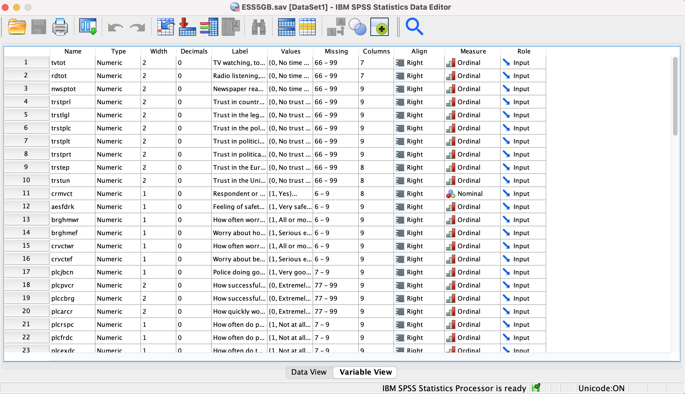
You can see two buttons at the bottom of this window that says: "Data View" and "Variable View". Go ahead and click on the first one.
It opens a data view of your dataset. Here you can see and manually change all the observations. You can think of that as an Excel spreadsheet, where each row represents one observation (for instance, a person you surveyed) and each column is a variable that stores some information about those observations (for instance, the age of your respondents or their salary).
Let's now click on "Variable View" at the bottom of this window and explore it. This section stores information on the variables that you have in your dataset. Each variable has several characteristics. We provided comments on some of the most used ones. You will use this information for the challenge below.
Now it's time for your first challenge! Go to the Variable View and create 3 variables (to do it simply scroll down all the variables and click on the first empty row in Variable View):
Now when you have a basic understanding of how SPSS looks and works, we can take one step further and explore how to import spreadsheets into SPSS. During the years of teaching SPSS, we encountered a question of how to import .csv or .xlsx files into SPSS. Indeed, it's a very useful skill, because a lot of datasets are stored as Excel or CSV (Comma-Separated Values) files. To do that go to SPSS -> File –> Import Data -> ...
Let's consider our example. Go to SPSS -> File –> Import Data -> Excel and let's import a file called dem_data.xlsx. You should see this window after selecting this file and clicking "Open":
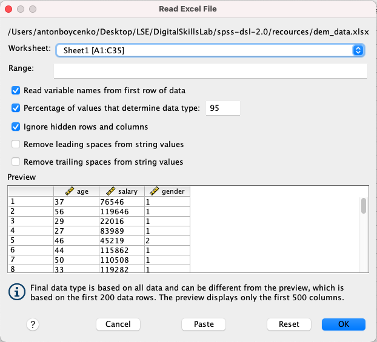
You can see that you can select a sheet from which to read the data and then we have several parameters that are quite straightforward. Let's click "OK" once we are satisfied with our settings. Now go to the variable view and look at the Measure settings SPSS used. Are they correct?
Now let's take the same file but save it as a CSV file. Go to SPSS -> File –> Import Data -> CSV and let's import a file called dem_data.csv. Now after clicking "Open" we will see a different window:
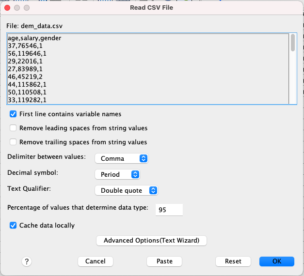
When importing CSV one should be careful, because columns are separated by a special symbol (usually a comma). You can see in the preview of our data that they are indeed separated by commas, and we select it in our Delimiter between values parameter. For your own research also pay attention to how decimal points are marked (commas or periods in the Decimal symbol parameter). Let's click "OK" once we are satisfied with our settings. Are the Measure settings here are correct again?
Note that you can open multiple datasets at the same time. Should you do so, pay attention to what dataset you are working at the moment.
As your second task:
dem_data in either Excel or CSV formatNow as we learned how to open datasets and import them from other file formats we can finally work with data. The first thing to do with data is preprocessing, so in this section, we will take one step into that and learn how to recode variables. There are many cases when it may be useful. For instance, you want to group your respondents into age groups. You want to have those that are younger than 30, from 31 to 50 and 50 and older. To do that, we can use SPSS functionality.
Let's use our ESS5GB.sav file again (you can close the imported ones). Let's take the following path `SPSS -> Transform –> Recode into Different Variables. Recoding into Different Variables will create new recoded variables compared to Recode into Same Variables that will change the existing ones. We choose the former in order to avoid changing the original data. Once you click on Recode into Different Variables you will see the following window:
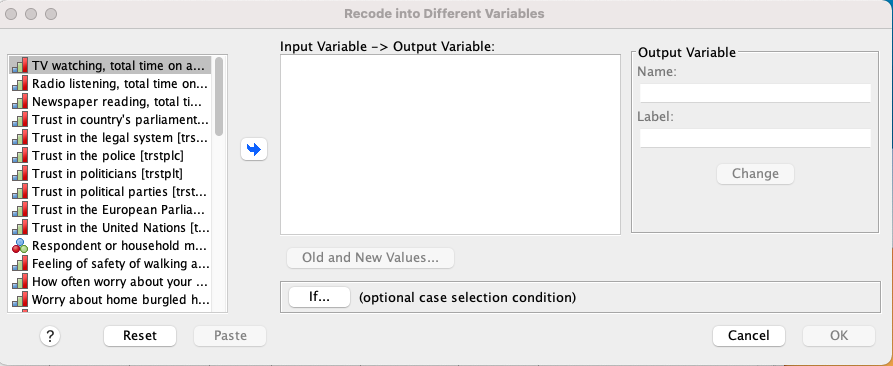
Lifehack not to get lost in variables You can see that there is an overwhelming number of variables in this dataset. No to get lost in them right-click in the area of variables (like in the picture below) and select
Display Variable Namesand `Sort Alphabetically. This way you will have short names ordered in a nice order.
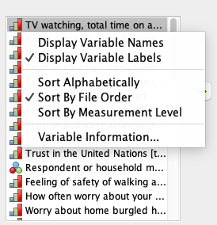
We will be working with a variable called agea (Age of respondent...). Find and click on this variable (it will be highlighted in blue) and click on the blue arrow in the middle of the window so it moves to the box on the right like this:
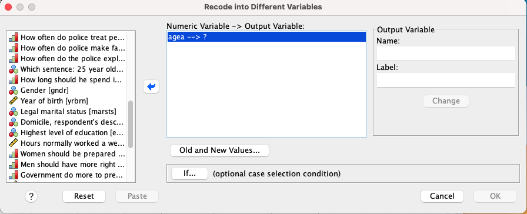
As you can see, it now shows agea ---> ? which means that SPSS wants you to name a new variable with recoded values. In order to do that provide it with a new name in the Name box in the Output variable area on the right. Let's call it age_re and give it a label of "Age groups". Don't forget to click Change once you have given all the details of the new variable. Now all the recoded values will be stored in age_re.
Now it's time for the actual recoding. Click on the Old and New Values... button to create recoding rules. Once you click it you will see a new window. In this window, we can create rules for recoding. First, let's create group 1 that is aged 30 and below. For that let's set these settings here:
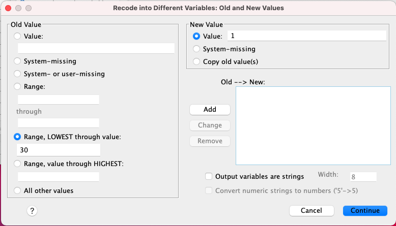
Once you input the values, find the Add button and click it. It should show a new line in the Old --> New box. If it did, you did everything correctly. Now let's create group 2 aged 31 to 50 like this.
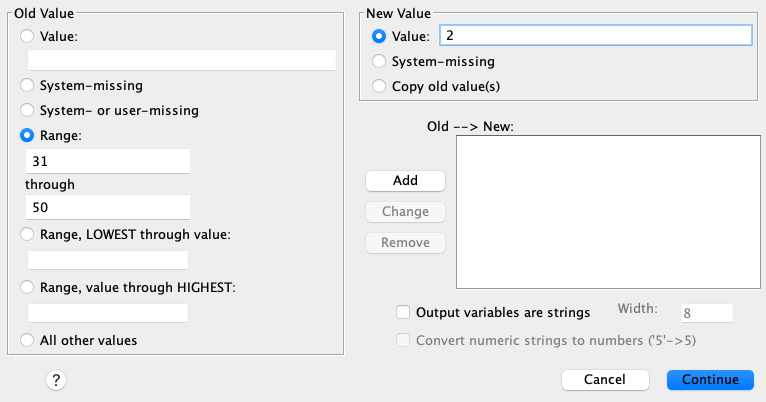
Don't forget to click Add again for that one. The last group will be the ones 51 and older. We can do it like this:
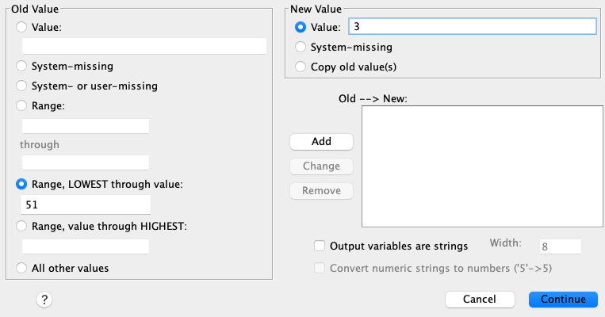
Perfect! Now we can click Continue in this window and the next one. Once you did it SPSS will navigate you to the Output window that should look somewhat like this:
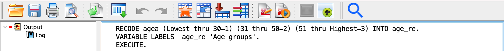
In this window, SPSS will show you what code it executes. In this case, it basically told us:
Hey! I recoded the agea variable into age_re using the rules you provided it and labeled it "Age groups".
Go ahead and check whether the values are recoded correctly by switching to *Data View and exploring the values of agea and age_re.
There are several variables evaluating trust in the ESS5GB.sav data. Each measure trust from 0 (No trust) to 10 (Complete trust). Take the variable trstprl (Trust in country's parliament) in ESS5GB.sav and recode it into a new variable with 3 categories:
Not only create new categories as 1,2 and 3, but label them as Low, Middle, and High trust in the Variable view.
Good job! We are almost done for today! The last part of our today's session is dedicated to calculating new variables. You might need it, for instance, when you are creating indices and want to give different weights to different variables. Let's consider an example.
We have several variables evaluating trust in political institutions. Let's say we wanted to calculate some indicators of the trust in the local institutions: parliament, legal system, and police. Let's calculate the mean of all of them for each person. To do that we would go to SPSS -> Transform –> Compute Variable. You will see something like this:
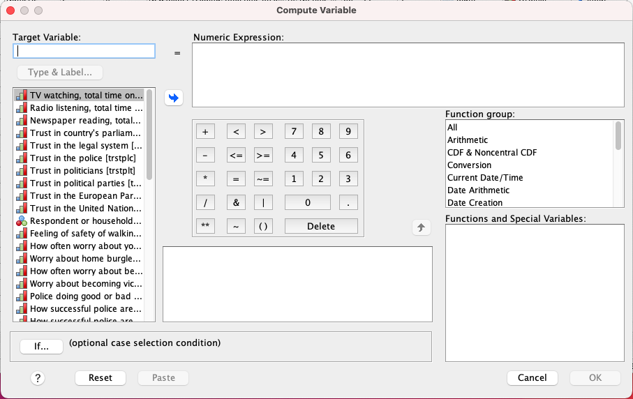
In this window, we can create variables that are a product of calculations and use other variables. Let's create a new one called trst_local (put it in the Target variable box). You can then see a small equality sign and a Numeric expression box. In this box, you can provide a formula to compute your new variable. You can use simple maths operations, but also can use functions.
You can explore all functions by clicking All in the Function group box on the right. All the functions will appear in the Functions and Special Variables box.
For instance, in our case, we need a function called MEAN(). In the brackets, we will give our variables that we want to find a mean of, namely trstprl, trstlgl, trstplc. In the end, we should get something like this:
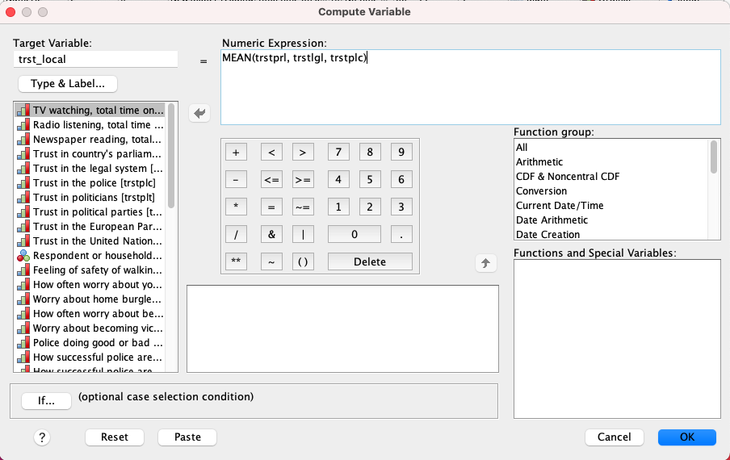
Go ahead, click OK, and check whether it actually conducted the calculation.
The final task! Using SPSS -> Transform –> Compute Variable create a new variable called trst_tot that will be a sum of all trust variables in the database.